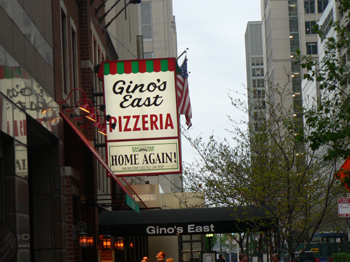
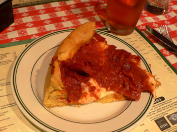
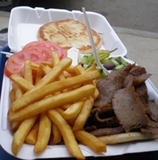

Chicago
When I told people I was going to Chicago for the weekend and asked them where I should eat, they mostly said to eat junky things, like pizza, gyros, and Mexican food. So that’s exactly what we did. I had never been to Chicago, but I was always curious about it. Some good friends grew up there, and my parents really love it. Our Uruguayan friend, who is staying with us for a couple weeks, finally convinced us that we should travel there with her, so off we went on Friday afternoon.
My first impressions were good ones. A train from the airport to the city! Who would have guessed that? It was easy to find our cheap hotel, and the town is stunning from the get-go, with the El and all the skyscrapers. I love the long avenues and alleyways, and how walkable the Michigan Avenue part of the city is. We were enchanted by the view from the bridge as you cross over onto the Magnificent Mile. But we were also starving, because American Airlines doesn’t even give you peanuts anymore.
We wandered aimlessly, feeling hungrier with each step, and we considered some sad-looking places. All we really wanted was pizza and beer. Finally, an old woman stopped us on State Street (that great street) and asked if we needed help. I explained our desperate situation, and she sent us to Gino’s East.

Gino’s looked like the real deal. The hostess took the form of an old Chicago broad on a walkie-talkie standing on the sidewalk, who treated our arrival like an emergency. (“I’ve got three out here. CAN YOU TAKE THREE?”) She led us into a half-empty restaurant, the walls of which were covered in “so-and-so was here” graffiti (which is encouraged at Gino’s.) The waitress told us that a large deep-dish pizza would be too much for us, and that we should have a medium. When was the last time that’s happened to you? Forty-five minutes later, the pie arrived.

I still prefer the thinner, charred, chewy crust of a New York pizza, but this was beyond satisfying. You can see how weird the Chicago crust is, though. It’s deep yellow, with the structure of a biscuit. I asked what made it yellow, and she said it was a secret, and typical of Chicago pizza. My bread teacher (who’s from Chicago) said it’s probably just semolina.

Day two was spent walking for miles, from the Loop to the West Loop to Wicker Park and Bucktown. We were on a mission to a place that allegedly serves duck fat fries on Friday and Saturday, but no matter how far we walked, it was still too far away. Chicago is big. We finally came across George’s, a hot dog/gyro/hamburger place in Bucktown. The food here is cheap, delicious, and fresh, and George himself was there, correcting my lousy pronunciation of “gyro.” This place is worth a detour if you’re in Chicago and after greasy food. Nathan and I couldn’t finish this platter between the two of us; there must have been a pound of meat in there.
These were our two most memorable meals in the city. Maybe someday we’ll be fancy enough to eat at Charlie Trotter’s and Alinea, but when I’m on my feet all day, this is exactly the kind of local food I want.
Comments
Well, how do you pronounce “gyro”? I’ve probably been saying it wrong all my life!
Leland and I have been resisting the standard American “hero” pronunciation, because that doesn’t sound any more Greek than the first half of gyroscope. But then what the guy said was pretty much “hero” with a rolled r and foreigny vowels, so, I guess we should just fall into line!
I would feel silly ordering a “hero” but I guess that’s what we’re all looking for!
Few things amuse me more than watching people order gyros in Pittsburgh and saying “giro” (a great way to put it Nathan – as the first half of gyroscope). It’s definitely hero, but with the slightest hint of a g on the front. ghero. If you will.
I’m glad you had a good time in Chicago. It’s one of my favorite places. Gino’s is the best Chicago style pizza, my favorite topping there is the sausage – it’s one big thin patty that sits on top of the tomato sauce and under the cheese. True decadence.
That’s funny, Mary, because two guys sitting next to us were talking about that sausage patty and saying how gross it was. I was thinking, “Hmm, a giant sausage patty on a pizza? Sounds delicious!” I’m glad we went to the right place!
Kathryn: that’s exactly how he said it, “ghero.” I think we can comfortably say “geero,” without trying to sound too authentic. Like “crehp” for crêpe, which is much better than “crape” but without the ridiculous “r.”
Leland, we should get together some time for French ‘r’ lessons (I teach French, remember). It involves little cups, a jug of water and lots of giggles.
ooh i’ve always wanted to go to chicago. that pizza looks amazing. i have a weak spot for the deep dish.
Yum! This post is the ultimate food porn for a pregnant lady. Thanks, Leland.
I too, prefer NY thin-crust pizza, but I do love a deep dish once in a while. I don’t really consider it pizza,(sorry Chicagonians), more of a delectable casserole of cheese, meat and biscuit!
Ooh- that pizza looks yummy! We went to Gino’s when we went to Chicago and I thought it was the best pizza I ever ate. We bought the rest home on the plane with us and the overhead compartment smelled like a pizza place!
My husband says there is really no such thing as bad pizza, although I think Pizza Hut comes pretty close. This deep-dish pie looks great, almost enough to convert the thin-crust lovers among us.
Congratulations, Anne! I hadn’t heard that you were expecting but I had been thinking that this was a great time for it, with you doing free-lance and all.
Mary, Leland may need brushing up on his “R’s” but he is actually fluent in French himself, having spent a couple of years in that country, living and teaching. In fact, he was speaking French the whole time he was in Chicago because it was the common language between him and the friend they were with. I, OTOH, am intrigued by your talk of the jug of water, little cups, and especially the giggling…
While it may be slightly pretentious, my aunt swears that Charlie Trotter changed her life. Clearly there is always a place for pizza and gyros and fries, but all I’m saying is, apparently Charlie is without a doubt worth the investment.
Add a comment